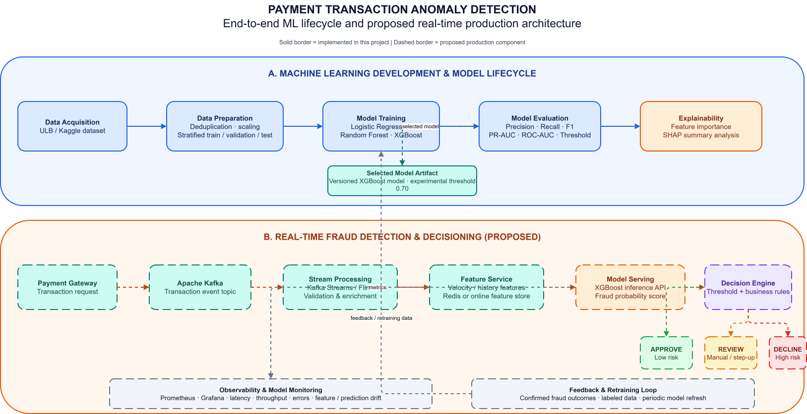

A workspace for building intelligent systems.
A growing collection of hands-on projects, experiments and technical explorations — from statistical learning to deep learning and intelligent applications.
Project library
Browse by area, search technologies, or open a project for details.
Payment Transaction Anomaly Detection
An end-to-end exploration of payment fraud detection using statistical analysis, anomaly detection and supervised learning.
Vine Video Analysis
Clustering and interpreting a large collection of short-form videos using video embeddings and transcript information.
Reinforcement Learning Experiments
Hands-on experiments with policy-gradient methods, PPO training and simulated control environments.
Customer Churn Prediction
Prior tabular prediction experiments using classical machine learning and deep learning methods.
NLP Review Chatbot
An NLP chatbot experiment using product review text, language processing and topic-oriented exploration.
System Architecture
From machine learning experimentation to a proposed real-time fraud detection architecture.
The architecture illustrates two connected perspectives: the machine learning development lifecycle and the proposed real-time transaction processing and fraud decisioning pipeline.

Built through experiments. Documented as systems.
This library records the problem, data, methods, results and engineering decisions behind each project. Entries are updated as work progresses.